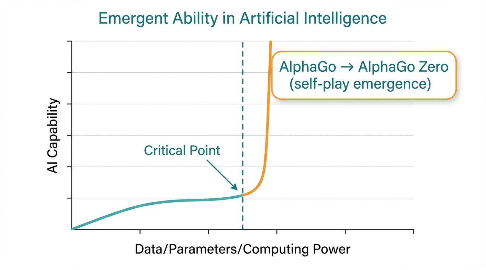

대표 사례: AlphaGo Zero
인간의 기보 학습 없이 3일간의 셀프 대국(Self-Play)만으로 이전 버전을 압도. 이는 데이터 양이 임계점을 넘을 때 AI가 스스로 전략을 창조함을 증명함.
단순한 양적 증가가 질적 변화를 일으키는 현상.
"데이터와 연산량이 특정 임계점을 넘어서는 순간, AI는 가르치지 않은 능력을 갑자기 보여줍니다."
작은 모델에서는 무작위 추측에 가깝던 성능이, 모델 크기가 커짐에 따라 서서히 증가하다가 특정 지점(Critical Point)을 지나면 폭발적으로(Sharp Jump) 향상됩니다.
단순 요약 → 심층 추론
과거 AI가 텍스트 요약 수준이었다면, 이제는 행간을 읽고 전략적 함의를 추론할 수 있습니다.
모방 → 창조적 생성
기존 자료의 짜깁기가 아니라, 학습된 패턴을 바탕으로 완전히 새로운 기획안과 솔루션을 제안합니다.
생산성 10x ~ 50x 도약
창발적 능력 덕분에 한 명의 전문가가 팀 전체의 업무량을 감당하는 '슈퍼 개인'이 가능해졌습니다.